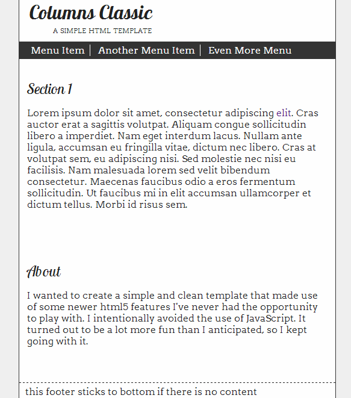
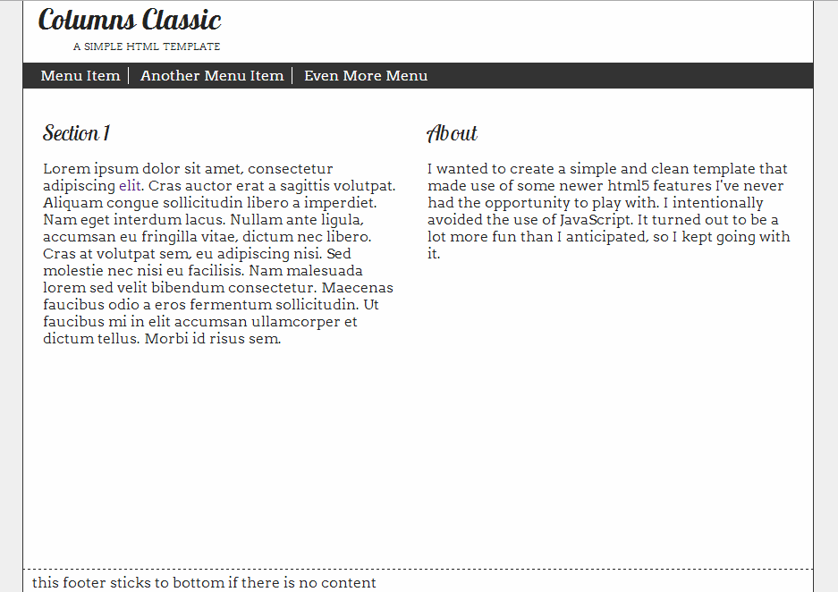
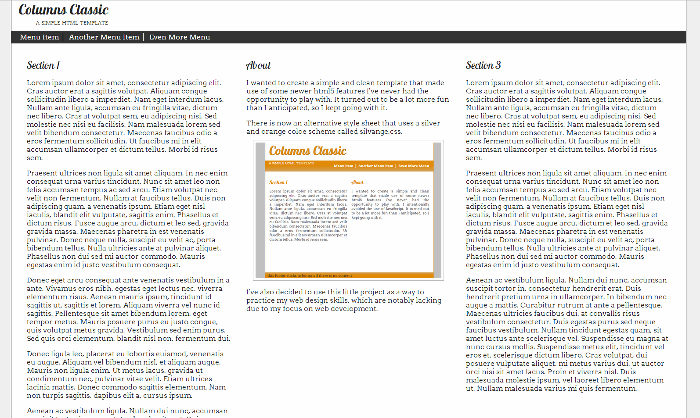
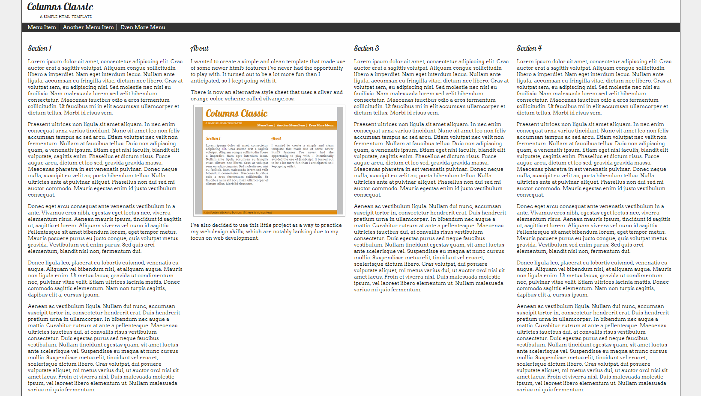
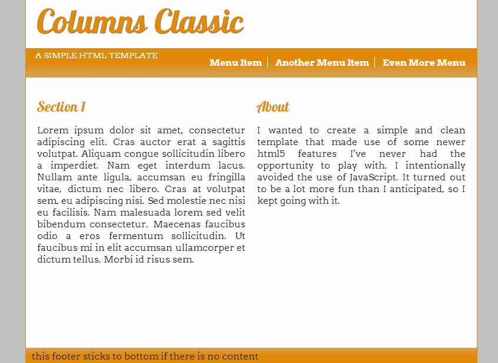

This template has only been tested in Chrome 30, Internet Explorer 10, and Firefox 22 & 25. The following screen shots are in Chrome 30.
Single column width for narrow views. 
Two columns display on most standard desktop resolutions. 
Triple columns will show up for the majority of wide screen monitors when the browser is maximized. 
Quadruple columns won't show up for many, but it's there if needed. Most of us can only see it by zooming out (crtl + mouse wheel for most browsers). 
There is an alternative style sheet that uses a silver and orange color scheme called silvange.css (clever right?). Click here to toggle between the stylesheets. 
I may add other stylesheets in the future to play with new ideas.
I wanted to create a simple and clean template that made use of some newer html5 features I've never had the opportunity to play with. It turned out to be a lot more fun than I anticipated, so I kept going with it.
I've also decided to use this little project as a way to practice my web design skills, which are notably lacking due to my focus on development.
There is little use of JavaScript. In fact it is only used to swap the stylesheets, and there are no libraries used. In the future I may add jQuery and have useful menu items.
I must give credit where it is due. Here is a list of links that helped me make this template.
My name is James Pryor and I like to play sudoku on extreme so the game will last days. I am also an aspiring web developer and computer science enthusiast.